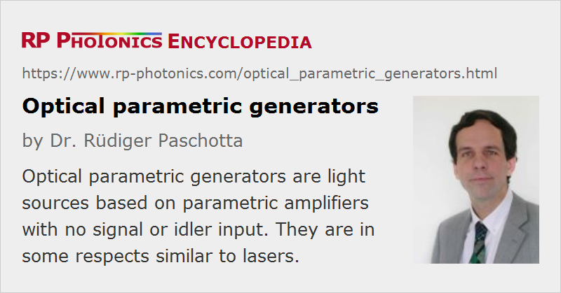

Optical Parametric Generators
Acronym: OPG
Definition: light sources based on parametric amplifiers with no signal or idler input
More general term: light sources
Categories: nonlinear optics, photonic devices, non-laser light sources
How to cite the article; suggest additional literature
Author: Dr. Rüdiger Paschotta
A parametric generator is an optical parametric amplifier with fairly high gain (many tens of decibels), so that a significant output power is generated even without any input signal. The physical origin of this emission is parametric fluorescence, amplified to high levels. This phenomenon is similar to amplified spontaneous emission (ASE) in a laser amplifier; in both cases, quantum fluctuations of the vacuum (→ vacuum noise) are amplified to macroscopic power levels.
High enough gain for parametric generation can only be achieved by pumping with intense laser pulses. Typical OPG setups are based on nanosecond pump pulses from a Q-switched laser, but it is also possible to operate OPGs with femtosecond or picosecond (ultrashort) pulses from a mode-locked laser. (Note that the parametric gain builds up and decays as fast as the pump pulse.) In most cases, ultrashort pulses first need to be amplified (e.g. in a regenerative amplifier), but by combining certain high-power mode-locked lasers with highly nonlinear crystals it is possible to use the laser pulses directly [4].
Compared with an optical parametric oscillator, the setup of a parametric generator is simpler, because it does not need a resonator. The wavelengths of the signal and idler can simply be tuned by influencing the phase-matching conditions, e.g. by varying the crystal temperature or rotating the crystal (for critical phase matching). It is convenient that there is no need to keep a resonator synchronized or well aligned. On the other hand, a parametric generator gives less control over the properties of the pulses than would be possible with a synchronously pumped optical parametric oscillator, which can also have a much lower threshold pump power. Also, the required high optical intensities in OPG setups sometimes enforce operation close to the optical damage threshold of the nonlinear material.
It is possible to lower the threshold and significantly decrease the linewidth by injection seeding a parametric generator with some signal light, e.g. from a laser diode. However, the device should then actually be seen as a parametric amplifier.
Suppliers
The RP Photonics Buyer's Guide contains 3 suppliers for optical parametric generators.
Questions and Comments from Users
Here you can submit questions and comments. As far as they get accepted by the author, they will appear above this paragraph together with the author’s answer. The author will decide on acceptance based on certain criteria. Essentially, the issue must be of sufficiently broad interest.
Please do not enter personal data here; we would otherwise delete it soon. (See also our privacy declaration.) If you wish to receive personal feedback or consultancy from the author, please contact him e.g. via e-mail.
By submitting the information, you give your consent to the potential publication of your inputs on our website according to our rules. (If you later retract your consent, we will delete those inputs.) As your inputs are first reviewed by the author, they may be published with some delay.
Bibliography
| [1] | D. A. Kleinman, “Theory of optical parametric noise”, Phys. Rev. 174 (3), 1027 (1968), doi:10.1103/PhysRev.174.1027 |
| [2] | A. Piskarskas, “Optical parametric generators: tunable, powerful, ultrafast”, Opt. Photon. News 7 (7), 25 (1997), doi:10.1364/OPN.8.7.000024 |
| [3] | A. Galvanauskas et al., “Fiber-laser-based femtosecond parametric generator in bulk periodically poled LiNbO3”, Opt. Lett. 22 (2), 105 (1997), doi:10.1364/OL.22.000105 |
| [4] | T. Südmeyer et al., “Novel ultrafast parametric systems: high repetition rate single-pass OPG and fiber-feedback OPO”, J. Phys. D: Appl. Phys. 34 (16), 2433 (2001), doi:10.1088/0022-3727/34/16/307 |
| [5] | B. Köhler et al., “A 9.5-W 82-MHz-repetition-rate picosecond optical parametric generator with cw diode laser injection seeding”, Appl. Phys. B 75, 31 (2002), doi:10.1007/s00340-002-0942-4 |
| [6] | S. V. Marchese et al., “Room temperature femtosecond optical parametric generation in MgO-doped stoichiometric LiTaO3”, Appl. Phys. B 81 (8), 1049 (2005), doi:10.1007/s00340-005-1964-5 |
| [7] | E. Innerhofer et al., “Analysis of nonlinear wavelength conversion system for a red–green–blue laser projection source”, J. Opt. Soc. Am. B 23 (2), 265 (2006), doi:10.1364/JOSAB.23.000265 |
See also: optical parametric amplifiers, parametric amplification, parametric fluorescence, optical parametric oscillators, amplified spontaneous emission
and other articles in the categories nonlinear optics, photonic devices, non-laser light sources
|  |
If you like this page, please share the link with your friends and colleagues, e.g. via social media:
These sharing buttons are implemented in a privacy-friendly way!